CODING AGENTS AS PIXEL WORLD MODELS
traex/DeepSeek-V4.1-Flash · mechanics_0010
点击播放 · 原生 RGB 像素
逐轮保存的候选
回放视频、检查图与代码变化。
每份候选均可单独播放。实际图片检查记录在下方工具轨迹中。
候选 01播放与检查图
点击播放 · 原生 RGB 像素

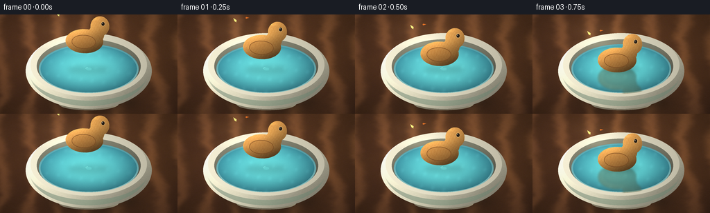
展开代码变化
--- 上一保存版本
+++ 本次保存版本
@@ -0,0 +1,519 @@
+from __future__ import annotations
+
+import math
+from pathlib import Path
+
+import numpy as np
+from PIL import Image, ImageDraw, ImageFilter
+
+import artifact_io
+
+
+CASE_DIR = Path(__file__).resolve().parent
+WIDTH = 256
+HEIGHT = 144
+FRAMES = 20
+FPS = 4.0
+SS = 4
+W = WIDTH * SS
+H = HEIGHT * SS
+
+
+def _smoothstep(edge0: float, edge1: float, x: np.ndarray) -> np.ndarray:
+ t = np.clip((x - edge0) / (edge1 - edge0), 0.0, 1.0)
+ return t * t * (3.0 - 2.0 * t)
+
+
+def _noise_layer(width: int, height: int, cells: int, seed: int) -> np.ndarray:
+ rng = np.random.default_rng(seed)
+ small = rng.random((max(2, cells), max(2, cells))).astype(np.float32)
+ image = Image.fromarray(np.uint8(np.clip(small, 0, 1) * 255), "L")
+ image = image.resize((width, height), Image.Resampling.BICUBIC)
+ return np.asarray(image, dtype=np.float32) / 255.0
+
+
+def _fbm(width: int, height: int, seed: int) -> np.ndarray:
+ layers = []
+ for i, cells in enumerate((3, 7, 15, 31, 63)):
+ layers.append(_noise_layer(width, height, cells, seed + i * 37) * (0.56**i))
+ total = sum(layers)
+ return total / np.max(total)
+
+
+def _ellipse_mask(cx: float, cy: float, rx: float, ry: float) -> np.ndarray:
+ yy, xx = np.mgrid[0:H, 0:W]
+ nx = (xx + 0.5 - cx) / max(rx, 0.01)
+ ny = (yy + 0.5 - cy) / max(ry, 0.01)
+ return (nx * nx + ny * ny <= 1.0).astype(np.float32)
+
+
+def _radial(cx: float, cy: float, rx: float, ry: float) -> tuple[np.ndarray, np.ndarray]:
+ yy, xx = np.mgrid[0:H, 0:W]
+ nx = (xx + 0.5 - cx) / max(rx, 0.01)
+ ny = (yy + 0.5 - cy) / max(ry, 0.01)
+ return nx.astype(np.float32), ny.astype(np.float32)
+
+
+def _blend(base: np.ndarray, color: np.ndarray, alpha: np.ndarray) -> np.ndarray:
+ a = np.clip(alpha, 0.0, 1.0)[..., None]
+ return base * (1.0 - a) + color * a
+
+
+def _rgba_from_rgb(rgb: np.ndarray, alpha: np.ndarray) -> Image.Image:
+ rgba = np.dstack(
+ [
+ np.clip(rgb[..., 0], 0, 255),
+ np.clip(rgb[..., 1], 0, 255),
+ np.clip(rgb[..., 2], 0, 255),
+ np.clip(alpha * 255.0, 0, 255),
+ ]
+ ).astype(np.uint8)
+ return Image.fromarray(rgba, "RGBA")
+
+
+def _paste_rgba(base: np.ndarray, layer: Image.Image) -> np.ndarray:
+ bg = Image.fromarray(np.uint8(np.clip(base, 0, 255)), "RGB")
+ bg.paste(layer, (0, 0), layer)
+ return np.asarray(bg, dtype=np.float32)
+
+
+def make_table() -> np.ndarray:
+ yy, xx = np.mgrid[0:H, 0:W]
+ x = xx / W
+ y = yy / H
+ noise = _fbm(W, H, 91)
+ fine = _noise_layer(W, H, 220, 177)
+
+ warp = 0.014 * np.sin(2 * math.pi * (y * 1.1 + 0.2 * np.sin(x * 4.0)))
+ warp += 0.005 * np.sin(2 * math.pi * (y * 3.2 + x * 1.7))
+ grain = np.sin(2 * math.pi * (x * 5.6 + warp * 9.0 + noise * 0.55))
+ grain = 0.5 + 0.5 * grain
+ grain = np.power(grain, 2.3)
+
+ warm = np.stack(
+ [
+ 80 + 44 * grain + 11 * noise,
+ 49 + 29 * grain + 8 * noise,
+ 31 + 17 * grain + 5 * fine,
+ ],
+ axis=-1,
+ )
+ warm = np.clip(warm, 0, 255)
+
+ light = 0.88 + 0.22 * (1.0 - np.sqrt((x - 0.30) ** 2 + (y - 0.20) ** 2))
+ light *= 0.91 + 0.09 * (1.0 - y)
+ warm *= light[..., None]
+
+ # A restrained, oiled-table sheen under the bowl.
+ sheen = np.exp(-(((x - 0.49) / 0.38) ** 2 + ((y - 0.54) / 0.27) ** 2) * 2.8)
+ warm += sheen[..., None] * np.array([10.0, 7.0, 5.0])
+
+ vignette = 1.0 - 0.22 * (((x - 0.5) / 0.68) ** 2 + ((y - 0.5) / 0.78) ** 2)
+ warm *= np.clip(vignette, 0.74, 1.0)[..., None]
+ return np.clip(warm, 0, 255)
+
+
+def _blurred_shadow(
+ base: np.ndarray,
+ cx: float,
+ cy: float,
+ rx: float,
+ ry: float,
+ strength: float,
+ blur: float,
+ tint: tuple[float, float, float] = (22, 18, 15),
+) -> np.ndarray:
+ alpha = _ellipse_mask(cx, cy, rx, ry)
+ shadow = Image.fromarray(np.uint8(alpha * 255), "L").filter(
+ ImageFilter.GaussianBlur(blur * SS)
+ )
+ alpha = np.asarray(shadow, dtype=np.float32) / 255.0 * strength
+ color = np.broadcast_to(np.array(tint, dtype=np.float32), base.shape)
+ return _blend(base, color, alpha)
+
+
+def make_bowl_scene() -> tuple[np.ndarray, np.ndarray, np.ndarray]:
+ scene = make_table()
+ cx, cy = 128 * SS, 81 * SS
+
+ # Ground contact shadow and the bowl's warm reflected shadow.
+ scene = _blurred_shadow(scene, cx + 6 * SS, 126 * SS, 70 * SS, 14 * SS, 0.52, 8.0)
+ scene = _blurred_shadow(scene, cx + 3 * SS, 124 * SS, 58 * SS, 10 * SS, 0.24, 3.0)
+
+ # Bowl foot.
+ foot_mask = _ellipse_mask(cx, 130 * SS, 43 * SS, 9 * SS)
+ nx, ny = _radial(cx, 130 * SS, 43 * SS, 9 * SS)
+ foot_shade = 0.85 - 0.18 * ny + 0.05 * nx
+ foot_rgb = np.stack(
+ [176 * foot_shade, 166 * foot_shade, 139 * foot_shade], axis=-1
+ )
+ scene = _blend(scene, foot_rgb, foot_mask)
+
+ # Rounded outer ceramic body.
+ body_mask = _ellipse_mask(cx, 82 * SS, 91 * SS, 55 * SS)
+ nx, ny = _radial(cx, 82 * SS, 91 * SS, 55 * SS)
+ body_light = 0.98 - 0.30 * nx - 0.20 * ny + 0.06 * np.exp(-((nx + 0.4) ** 2) * 5)
+ body_light += 0.10 * np.exp(-(((nx - 0.38) / 0.14) ** 2 + ((ny + 0.04) / 0.52) ** 2))
+ body_rgb = np.stack(
+ [
+ 216 * body_light,
+ 211 * body_light,
+ 185 * body_light,
+ ],
+ axis=-1,
+ )
+ # Very subtle ceramic mottling.
+ mottle = _noise_layer(W, H, 140, 404) - 0.5
+ body_rgb += mottle[..., None] * np.array([5.0, 4.5, 3.5])
+ scene = _blend(scene, body_rgb, body_mask)
+
+ # Sage glaze band, following the bowl's lower contour.
+ band_outer = _ellipse_mask(cx, 83 * SS, 86 * SS, 50 * SS)
+ band_inner = _ellipse_mask(cx, 83 * SS, 86 * SS, 42 * SS)
+ band = np.clip(band_outer - band_inner, 0.0, 1.0)
+ band *= _smoothstep(0.05, 0.55, ny)
+ band_rgb = np.stack(
+ [
+ 104 + 20 * (1 - np.abs(nx)),
+ 129 + 20 * (1 - np.abs(nx)),
+ 112 + 13 * (1 - np.abs(nx)),
+ ],
+ axis=-1,
+ )
+ scene = _blend(scene, band_rgb, band * 0.52)
+
+ # Rim thickness and inner wall.
+ rim_mask = _ellipse_mask(cx, 73 * SS, 84 * SS, 46 * SS)
+ inner_mask = _ellipse_mask(cx, 75 * SS, 75 * SS, 39 * SS)
+ rim_band = np.clip(rim_mask - inner_mask, 0, 1)
+ nx, ny = _radial(cx, 73 * SS, 84 * SS, 46 * SS)
+ rim_light = 0.97 - 0.12 * nx + 0.10 * np.exp(-((nx + 0.25) ** 2 + (ny + 0.75) ** 2) * 8)
+ rim_rgb = np.stack(
+ [232 * rim_light, 226 * rim_light, 201 * rim_light], axis=-1
+ )
+ scene = _blend(scene, rim_rgb, rim_band)
+
+ # Inner ceramic wall shading, then the water surface.
+ wall_mask = inner_mask.copy()
+ nx, ny = _radial(cx, 76 * SS, 76 * SS, 40 * SS)
+ wall_light = 0.64 - 0.18 * ny - 0.08 * nx
+ wall_rgb = np.stack(
+ [166 * wall_light, 166 * wall_light, 143 * wall_light], axis=-1
+ )
+ scene = _blend(scene, wall_rgb, wall_mask)
+
+ water_mask = _ellipse_mask(cx, 79 * SS, 72 * SS, 36 * SS)
+ nx, ny = _radial(cx, 79 * SS, 72 * SS, 36 * SS)
+ water_depth = np.clip(1.0 - (nx * nx + ny * ny), 0.0, 1.0)
+ water_light = 0.80 + 0.25 * water_depth - 0.10 * ny - 0.08 * nx
+ water_rgb = np.stack(
+ [
+ 59 + 30 * water_depth,
+ 136 + 48 * water_depth,
+ 150 + 33 * water_depth,
+ ],
+ axis=-1,
+ ) * water_light[..., None] / 0.88
+ water_rgb += np.array([2.0, 8.0, 9.0])
+ scene = _blend(scene, water_rgb, water_mask)
+
+ # Water meniscus: a pale line along the inside edge, strongest at the front.
+ meniscus = np.clip(_ellipse_mask(cx, 79 * SS, 72 * SS, 36 * SS) - _ellipse_mask(cx, 79 * SS, 69.5 * SS, 34 * SS), 0, 1)
+ front = _smoothstep(-0.8, 1.0, ny)
+ scene = _blend(scene, np.array([171, 221, 215]), meniscus * (0.26 + 0.42 * front))
+
+ # Soft reflected light on the back inner wall.
+ back_glow = np.exp(-(((nx + 0.08) / 0.55) ** 2 + ((ny + 0.72) / 0.16) ** 2) * 2.2)
+ scene += back_glow[..., None] * np.array([20.0, 24.0, 19.0])
+
+ # Front rim sits over the water, establishing depth.
+ front_rim = np.clip(rim_mask - inner_mask, 0, 1) * _smoothstep(-0.18, 0.78, ny)
+ scene = _blend(scene, rim_rgb, front_rim * 0.98)
+
+ # Crisp upper-left rim highlight.
+ yy, xx = np.mgrid[0:H, 0:W]
+ d = np.sqrt(((xx + 0.5 - (cx - 20 * SS)) / (65 * SS)) ** 2 + ((yy + 0.5 - (cy - 38 * SS)) / (9 * SS)) ** 2)
+ highlight = np.clip(1.0 - d, 0, 1) * _smoothstep(-0.2, 0.7, -nx)
+ scene += highlight[..., None] * np.array([24.0, 23.0, 18.0])
+
+ return np.clip(scene, 0, 255), water_mask, rim_mask
+
+
+def _draw_duck_sprite(scale: float = 1.0) -> Image.Image:
+ sw, sh = 100, 80
+ sw_s, sh_s = sw * SS, sh * SS
+ yy, xx = np.mgrid[0:sh_s, 0:sw_s]
+ x = xx / SS
+ y = yy / SS
+
+ def ellipse(cx: float, cy: float, rx: float, ry: float) -> np.ndarray:
+ return (((x - cx) / rx) ** 2 + ((y - cy) / ry) ** 2 <= 1.0).astype(np.float32)
+
+ body = ellipse(44, 50, 28, 18)
+ head = ellipse(66, 27, 14, 15)
+ neck = (((x - 61) / 12) ** 2 + ((y - 39) / 13) ** 2 <= 1.0).astype(np.float32)
+ tail = np.zeros_like(body)
+ draw_tail = Image.fromarray(np.uint8(tail * 255), "L")
+ ImageDraw.Draw(draw_tail).polygon(
+ [(21, 45), (3, 34), (9, 51), (20, 58)], fill=255
+ )
+ tail = np.asarray(draw_tail, dtype=np.float32) / 255.0
+
+ silhouette = np.clip(body + head + neck + tail, 0, 1)
+ # Slightly irregular hand-carved edge.
+ wood_noise = _noise_layer(sw_s, sh_s, 24, 711)
+ grain_warp = 0.018 * np.sin(y * 0.32) + 0.035 * (wood_noise - 0.5)
+ grain_phase = x * 0.55 + y * 0.12 + grain_warp * 8.0
+ grain = 0.5 + 0.5 * np.sin(grain_phase * 2 * math.pi)
+ fine = _noise_layer(sw_s, sh_s, 100, 991)
+ grain = np.power(grain, 2.0) * 0.7 + fine * 0.30
+
+ light = 0.96 - 0.010 * (x - 42) - 0.012 * (y - 42)
+ light += 0.09 * np.exp(-(((x - 38) / 18) ** 2 + ((y - 35) / 8) ** 2))
+ light -= 0.10 * np.clip((y - 50) / 30, 0, 1)
+ base_rgb = np.stack(
+ [
+ 204 + 24 * grain,
+ 137 + 34 * grain,
+ 65 + 30 * grain,
+ ],
+ axis=-1,
+ )
+ base_rgb *= light[..., None]
+
+ # Warm shadow at the lower edge and honey-colored upper planes.
+ lower = np.clip((y - 49) / 22, 0, 1)
+ base_rgb *= (1.0 - 0.18 * lower)[..., None]
+ upper = np.exp(-(((x - 49) / 26) ** 2 + ((y - 28) / 10) ** 2))
+ base_rgb += upper[..., None] * np.array([20.0, 17.0, 9.0])
+
+ alpha = silhouette.copy()
+ rgb = base_rgb.copy()
+
+ # Painted orange beak.
+ beak = np.zeros_like(alpha)
+ beak_img = Image.fromarray(np.uint8(beak * 255), "L")
+ ImageDraw.Draw(beak_img).polygon(
+ [(77, 25), (95, 29), (78, 35), (74, 31)], fill=255
+ )
+ beak = np.asarray(beak_img, dtype=np.float32) / 255.0
+ beak_rgb = np.stack(
+ [
+ 226 - 8 * np.clip((y - 27) / 8, 0, 1),
+ 112 - 15 * np.clip((y - 27) / 8, 0, 1),
+ 39 + 2 * np.sin(x * 0.8),
+ ],
+ axis=-1,
+ )
+ rgb = rgb * (1 - beak[..., None]) + beak_rgb * beak[..., None]
+ alpha = np.clip(alpha + beak, 0, 1)
+
+ # Wing panel and carved feather lines.
+ wing = ellipse(43, 51, 18, 10.5)
+ wing_edge = np.clip(wing - ellipse(43, 51, 17.1, 9.5), 0, 1)
+ wing_tint = np.stack(
+ [171 + 14 * grain, 111 + 18 * grain, 53 + 13 * grain], axis=-1
+ )
+ rgb = rgb * (1 - wing[..., None] * 0.30) + wing_tint * (wing[..., None] * 0.30)
+ rgb = rgb * (1 - wing_edge[..., None] * 0.55) + np.array([105, 63, 30]) * (wing_edge[..., None] * 0.55)
+
+ # Dark carved outline, drawn with a distance field for a slightly soft edge.
+ yy_f, xx_f = np.mgrid[0:sh_s, 0:W].astype(np.float32)
+ del yy_f, xx_f
+ outer = np.clip(
+ ((np.abs((x - 44) / 28) ** 6 + np.abs((y - 50) / 18) ** 6) <= 1.0)
+ | (((x - 66) / 14) ** 2 + ((y - 27) / 15) ** 2 <= 1.0),
+ 0,
+ 1,
+ ).astype(np.float32)
+ inner = silhouette
+ edge = np.clip(outer - inner, 0, 1)
+ # The exact six-power outline is not needed; the silhouette itself gets a
+ # subtle dark rim from its distance to transparent pixels.
+ edge_img = Image.fromarray(np.uint8(silhouette * 255), "L").filter(ImageFilter.MaxFilter(5))
+ edge_alpha = np.asarray(edge_img, dtype=np.float32) / 255.0 - silhouette
+ rgb = rgb * (1 - np.clip(edge_alpha, 0, 1)[..., None] * 0.82) + np.array([76, 44, 21]) * (np.clip(edge_alpha, 0, 1)[..., None] * 0.82)
+
+ # Painted eye and its tiny catchlight.
+ eye = ellipse(70.5, 23.2, 2.35, 2.75)
+ eye_ring = np.clip(ellipse(70.5, 23.2, 3.2, 3.5) - ellipse(70.5, 23.2, 2.35, 2.75), 0, 1)
+ rgb = rgb * (1 - eye_ring[..., None] * 0.35) + np.array([247, 222, 168]) * (eye_ring[..., None] * 0.35)
+ rgb = rgb * (1 - eye[..., None]) + np.array([38, 29, 21]) * eye[..., None]
+ catch = ellipse(69.7, 22.2, 0.55, 0.65)
+ rgb = rgb * (1 - catch[..., None]) + np.array([250, 244, 220]) * catch[..., None]
+
+ # Glossy top highlight.
+ gloss = np.exp(-(((x - 56) / 11) ** 2 + ((y - 16) / 3.0) ** 2) * 2.0) * head
+ rgb += gloss[..., None] * np.array([34.0, 27.0, 14.0])
+
+ rgba = np.dstack([np.clip(rgb, 0, 255), np.clip(alpha, 0, 1) * 255]).astype(np.uint8)
+ sprite = Image.fromarray(rgba, "RGBA")
+ if abs(scale - 1.0) > 1e-6:
+ new_size = (max(1, round(sprite.width * scale)), max(1, round(sprite.height * scale)))
+ sprite = sprite.resize(new_size, Image.Resampling.LANCZOS)
+ return sprite
+
+
+def _water_layer(
+ scene: np.ndarray,
+ water_mask: np.ndarray,
+ frame: int,
+ duck_center_y: float,
+) -> tuple[np.ndarray, np.ndarray]:
+ cx, cy = 128.0, 79.0
+ water = scene.copy()
+ fx = frame
+
+ # Subtle moving caustics across the water, kept behind the toy.
+ yy, xx = np.mgrid[0:H, 0:W]
+ u = xx / SS
+ v = yy / SS
+ caustic = np.sin(0.16 * u + 0.22 * v + fx * 0.42)
+ caustic *= np.sin(0.21 * u - 0.11 * v - fx * 0.31)
+ caustic = np.power(np.clip(0.5 + 0.5 * caustic, 0, 1), 7)
+ caustic *= 0.08 + 0.035 * math.sin(fx * 0.8)
+ water += caustic[..., None] * np.array([52.0, 79.0, 77.0])
+
+ # Ripples begin at contact and travel gently outward.
+ ring_layer = Image.new("L", (W, H), 0)
+ ring_color = Image.new("L", (W, H), 0)
+ d = ImageDraw.Draw(ring_layer)
+ dc = ImageDraw.Draw(ring_color)
+ age = max(0, fx - 4)
+ for k in range(4):
+ phase = age - k * 2.2
+ if phase < 0:
+ continue
+ radius = 4.0 + phase * 4.4
+ if radius > 77:
+ continue
+ strength = max(0.0, 1.0 - radius / 82.0)
+ width = max(1, round((2.2 - k * 0.28) * SS))
+ box = [
+ (cx - radius) * SS,
+ (cy - radius * 0.50) * SS,
+ (cx + radius) * SS,
+ (cy + radius * 0.50) * SS,
+ ]
+ value = int(255 * min(1.0, strength * 0.9))
+ d.ellipse(box, outline=value, width=width)
+ # Broken, brighter specular crests on the upper-left side.
+ if k < 2:
+ arc_box = [
+ box[0] - SS,
+ box[1] - SS,
+ box[2] + SS,
+ box[3] + SS,
+ ]
+ dc.arc(arc_box, 186, 252, fill=int(value * 0.65), width=max(1, width // 2))
+ dc.arc(arc_box, 20, 72, fill=int(value * 0.30), width=1)
+
+ ring = np.asarray(ring_layer, dtype=np.float32) / 255.0
+ ring_spec = np.asarray(ring_color, dtype=np.float32) / 255.0
+ water += (ring * 0.24)[..., None] * np.array([56.0, 87.0, 80.0])
+ water += (ring_spec * 0.55)[..., None] * np.array([108.0, 116.0, 96.0])
+
+ # A tiny bright contact dimple at the moment the toy touches the water.
+ contact_strength = math.exp(-((fx - 4.2) / 1.6) ** 2)
+ contact = np.exp(
+ -(((u - cx) / 7.0) ** 2 + ((v - cy) / 2.5) ** 2) * 1.6
+ )
+ water += (contact * contact_strength * 0.45)[..., None] * np.array([96.0, 112.0, 96.0])
+
+ water = _blend(scene, water, water_mask)
+ return water, water_mask
+
+
+def render_frame(
+ static_scene: np.ndarray,
+ water_mask: np.ndarray,
+ rim_mask: np.ndarray,
+ duck_sprite: Image.Image,
+ frame: int,
+) -> np.ndarray:
+ # Ease downward, then settle with a very small buoyant bob.
+ keys = np.array([29.0, 37.5, 47.0, 56.0, 61.0, 63.0, 63.4, 63.1, 63.4, 63.2], dtype=np.float32)
+ if frame < len(keys):
+ center_y = float(keys[frame])
+ else:
+ center_y = 63.15 + 0.18 * math.sin((frame - 8) * 0.78)
+
+ scene, wm = _water_layer(static_scene, water_mask, frame, center_y)
+
+ cx = 128.0
+ # Contact shadow and a faint reflected duck on the water.
+ contact_amt = float(np.clip((center_y - 43.0) / 19.0, 0.0, 1.0))
+ shadow_rx = 24.0 + 7.0 * (1.0 - contact_amt)
+ shadow_ry = 5.0 + 2.0 * (1.0 - contact_amt)
+ shadow_y = 78.0 + 2.0 * (1.0 - contact_amt)
+ shadow = _ellipse_mask(cx * SS, shadow_y * SS, shadow_rx * SS, shadow_ry * SS)
+ shadow_img = Image.fromarray(np.uint8(shadow * 255), "L").filter(ImageFilter.GaussianBlur(4.0 * SS))
+ shadow = np.asarray(shadow_img, dtype=np.float32) / 255.0
+ shadow = shadow * (0.24 + 0.16 * contact_amt)
+ scene = _blend(scene, np.broadcast_to(np.array([35, 66, 67], dtype=np.float32), scene.shape), shadow * wm)
+
+ # Reflection only once the toy is near/inside the bowl.
+ reflect_alpha = float(np.clip((center_y - 47.0) / 13.0, 0.0, 1.0))
+ if reflect_alpha > 0:
+ reflected = duck_sprite.transpose(Image.Transpose.FLIP_TOP_BOTTOM)
+ tint = Image.new("RGBA", reflected.size, (33, 86, 83, 0))
+ tint.putalpha(reflected.getchannel("A").point(lambda p: int(p * 0.20 * reflect_alpha)))
+ reflected = Image.blend(reflected, tint, 0.62).filter(ImageFilter.GaussianBlur(1.4 * SS))
+ # Sprite's body sits below its center; mirror across the water line.
+ paste_y = 2 * 79.0 - center_y
+ px = round(cx * SS - reflected.width / 2)
+ py = round(paste_y * SS - reflected.height / 2)
+ refl_layer = Image.new("RGBA", (W, H), (0, 0, 0, 0))
+ refl_layer.alpha_composite(reflected, (px, py))
+ refl_arr = np.asarray(refl_layer, dtype=np.float32)
+ a = refl_arr[..., 3:4] / 255.0 * wm[..., None]
+ scene = scene * (1.0 - a) + refl_arr[..., :3] * a
+
+ # Gentle tilt in the air, then nearly level on the water.
+ angle = -2.4 + min(frame, 4) * 0.55 + 0.35 * math.sin(frame * 0.72)
+ if frame >= 5:
+ angle = 0.28 * math.sin((frame - 5) * 0.7)
+ duck = duck_sprite.rotate(angle, resample=Image.Resampling.BICUBIC, expand=True)
+
+ # Perspective scale: slightly larger as it approaches the camera.
+ scale = 0.72 + 0.025 * float(np.clip((center_y - 29.0) / 34.0, 0.0, 1.0))
+ if abs(scale - 1.0) > 1e-6:
+ duck = duck.resize(
+ (max(1, round(duck.width * scale / 0.74)), max(1, round(duck.height * scale / 0.74))),
+ Image.Resampling.LANCZOS,
+ )
+ px = round(cx * SS - duck.width / 2)
+ py = round(center_y * SS - duck.height / 2)
+ duck_layer = Image.new("RGBA", (W, H), (0, 0, 0, 0))
+ duck_layer.alpha_composite(duck, (px, py))
+ scene = _paste_rgba(scene, duck_layer)
+
+ # Small glints on the rim and water, and a soft lens-free final grade.
+ yy, xx = np.mgrid[0:H, 0:W]
+ x = xx / W
+ y = yy / H
+ bloom = np.exp(-(((x - 0.34) / 0.13) ** 2 + ((y - 0.17) / 0.10) ** 2))
+ scene += bloom[..., None] * np.array([9.0, 8.0, 6.0])
+ vignette = 1.0 - 0.11 * (((x - 0.5) / 0.68) ** 2 + ((y - 0.5) / 0.75) ** 2)
+ scene *= np.clip(vignette, 0.83, 1.0)[..., None]
+
+ # Very light grain prevents flat digital gradients after downsampling.
+ grain = _noise_layer(W, H, 210, 1200 + frame)
+ scene += (grain[..., None] - 0.5) * 2.0
+ return np.clip(scene, 0, 255)
+
+
+def main() -> None:
+ static_scene, water_mask, rim_mask = make_bowl_scene()
+ duck = _draw_duck_sprite(1.0)
+ frames = []
+ for frame in range(FRAMES):
+ high = render_frame(static_scene, water_mask, rim_mask, duck, frame)
+ image = Image.fromarray(np.uint8(np.clip(high, 0, 255)), "RGB")
+ image = image.resize((WIDTH, HEIGHT), Image.Resampling.LANCZOS)
+ frames.append(np.asarray(image, dtype=np.uint8))
+ artifact_io.save(frames, CASE_DIR)
+
+
+if __name__ == "__main__":
+ main()
候选 02播放与检查图
点击播放 · 原生 RGB 像素
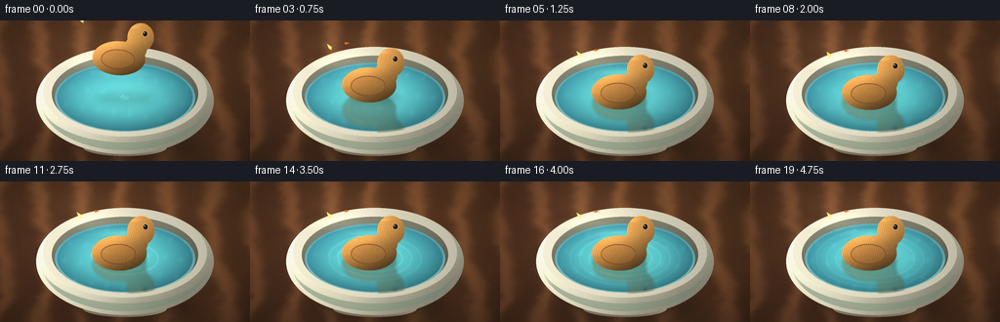
展开代码变化
--- 上一保存版本
+++ 本次保存版本
@@ -134,31 +134,32 @@
def make_bowl_scene() -> tuple[np.ndarray, np.ndarray, np.ndarray]:
scene = make_table()
- cx, cy = 128 * SS, 81 * SS
+ cx, cy = 128 * SS, 72 * SS
# Ground contact shadow and the bowl's warm reflected shadow.
- scene = _blurred_shadow(scene, cx + 6 * SS, 126 * SS, 70 * SS, 14 * SS, 0.52, 8.0)
- scene = _blurred_shadow(scene, cx + 3 * SS, 124 * SS, 58 * SS, 10 * SS, 0.24, 3.0)
+ scene = _blurred_shadow(scene, cx + 7 * SS, 126 * SS, 76 * SS, 13 * SS, 0.54, 8.0)
+ scene = _blurred_shadow(scene, cx + 4 * SS, 124 * SS, 62 * SS, 9 * SS, 0.24, 3.0)
# Bowl foot.
- foot_mask = _ellipse_mask(cx, 130 * SS, 43 * SS, 9 * SS)
- nx, ny = _radial(cx, 130 * SS, 43 * SS, 9 * SS)
+ foot_mask = _ellipse_mask(cx, 129 * SS, 48 * SS, 8 * SS)
+ nx, ny = _radial(cx, 129 * SS, 48 * SS, 8 * SS)
foot_shade = 0.85 - 0.18 * ny + 0.05 * nx
foot_rgb = np.stack(
[176 * foot_shade, 166 * foot_shade, 139 * foot_shade], axis=-1
)
scene = _blend(scene, foot_rgb, foot_mask)
- # Rounded outer ceramic body.
- body_mask = _ellipse_mask(cx, 82 * SS, 91 * SS, 55 * SS)
- nx, ny = _radial(cx, 82 * SS, 91 * SS, 55 * SS)
- body_light = 0.98 - 0.30 * nx - 0.20 * ny + 0.06 * np.exp(-((nx + 0.4) ** 2) * 5)
- body_light += 0.10 * np.exp(-(((nx - 0.38) / 0.14) ** 2 + ((ny + 0.04) / 0.52) ** 2))
+ # The visible lower half of a wide, shallow ceramic bowl.
+ body_mask = _ellipse_mask(cx, 72 * SS, 92 * SS, 55 * SS)
+ body_mask *= _smoothstep(71.0 * SS, 72.0 * SS, np.mgrid[0:H, 0:W][0])
+ nx, ny = _radial(cx, 72 * SS, 92 * SS, 55 * SS)
+ body_light = 0.98 - 0.30 * nx - 0.12 * ny + 0.08 * np.exp(-((nx + 0.40) ** 2) * 5)
+ body_light += 0.12 * np.exp(-(((nx - 0.40) / 0.13) ** 2 + ((ny - 0.12) / 0.62) ** 2))
body_rgb = np.stack(
[
- 216 * body_light,
+ 218 * body_light,
211 * body_light,
- 185 * body_light,
+ 182 * body_light,
],
axis=-1,
)
@@ -168,10 +169,10 @@
scene = _blend(scene, body_rgb, body_mask)
# Sage glaze band, following the bowl's lower contour.
- band_outer = _ellipse_mask(cx, 83 * SS, 86 * SS, 50 * SS)
- band_inner = _ellipse_mask(cx, 83 * SS, 86 * SS, 42 * SS)
+ band_outer = _ellipse_mask(cx, 72 * SS, 90 * SS, 53 * SS)
+ band_inner = _ellipse_mask(cx, 72 * SS, 90 * SS, 42 * SS)
band = np.clip(band_outer - band_inner, 0.0, 1.0)
- band *= _smoothstep(0.05, 0.55, ny)
+ band *= _smoothstep(0.12, 0.65, ny)
band_rgb = np.stack(
[
104 + 20 * (1 - np.abs(nx)),
@@ -182,11 +183,11 @@
)
scene = _blend(scene, band_rgb, band * 0.52)
- # Rim thickness and inner wall.
- rim_mask = _ellipse_mask(cx, 73 * SS, 84 * SS, 46 * SS)
- inner_mask = _ellipse_mask(cx, 75 * SS, 75 * SS, 39 * SS)
+ # Wide top opening, with a visibly thick glazed rim.
+ rim_mask = _ellipse_mask(cx, 72 * SS, 94 * SS, 34 * SS)
+ inner_mask = _ellipse_mask(cx, 74 * SS, 83 * SS, 29 * SS)
rim_band = np.clip(rim_mask - inner_mask, 0, 1)
- nx, ny = _radial(cx, 73 * SS, 84 * SS, 46 * SS)
+ nx, ny = _radial(cx, 72 * SS, 94 * SS, 34 * SS)
rim_light = 0.97 - 0.12 * nx + 0.10 * np.exp(-((nx + 0.25) ** 2 + (ny + 0.75) ** 2) * 8)
rim_rgb = np.stack(
[232 * rim_light, 226 * rim_light, 201 * rim_light], axis=-1
@@ -195,22 +196,22 @@
# Inner ceramic wall shading, then the water surface.
wall_mask = inner_mask.copy()
- nx, ny = _radial(cx, 76 * SS, 76 * SS, 40 * SS)
- wall_light = 0.64 - 0.18 * ny - 0.08 * nx
+ nx, ny = _radial(cx, 75 * SS, 82 * SS, 30 * SS)
+ wall_light = 0.66 - 0.16 * ny - 0.08 * nx
wall_rgb = np.stack(
[166 * wall_light, 166 * wall_light, 143 * wall_light], axis=-1
)
scene = _blend(scene, wall_rgb, wall_mask)
- water_mask = _ellipse_mask(cx, 79 * SS, 72 * SS, 36 * SS)
- nx, ny = _radial(cx, 79 * SS, 72 * SS, 36 * SS)
+ water_mask = _ellipse_mask(cx, 75 * SS, 80 * SS, 27 * SS)
+ nx, ny = _radial(cx, 75 * SS, 80 * SS, 27 * SS)
water_depth = np.clip(1.0 - (nx * nx + ny * ny), 0.0, 1.0)
- water_light = 0.80 + 0.25 * water_depth - 0.10 * ny - 0.08 * nx
+ water_light = 0.78 + 0.25 * water_depth - 0.10 * ny - 0.08 * nx
water_rgb = np.stack(
[
- 59 + 30 * water_depth,
- 136 + 48 * water_depth,
- 150 + 33 * water_depth,
+ 48 + 28 * water_depth,
+ 119 + 47 * water_depth,
+ 136 + 32 * water_depth,
],
axis=-1,
) * water_light[..., None] / 0.88
@@ -218,7 +219,7 @@
scene = _blend(scene, water_rgb, water_mask)
# Water meniscus: a pale line along the inside edge, strongest at the front.
- meniscus = np.clip(_ellipse_mask(cx, 79 * SS, 72 * SS, 36 * SS) - _ellipse_mask(cx, 79 * SS, 69.5 * SS, 34 * SS), 0, 1)
+ meniscus = np.clip(_ellipse_mask(cx, 75 * SS, 80 * SS, 27 * SS) - _ellipse_mask(cx, 75 * SS, 77.2 * SS, 25.1 * SS), 0, 1)
front = _smoothstep(-0.8, 1.0, ny)
scene = _blend(scene, np.array([171, 221, 215]), meniscus * (0.26 + 0.42 * front))
@@ -232,7 +233,7 @@
# Crisp upper-left rim highlight.
yy, xx = np.mgrid[0:H, 0:W]
- d = np.sqrt(((xx + 0.5 - (cx - 20 * SS)) / (65 * SS)) ** 2 + ((yy + 0.5 - (cy - 38 * SS)) / (9 * SS)) ** 2)
+ d = np.sqrt(((xx + 0.5 - (cx - 24 * SS)) / (72 * SS)) ** 2 + ((yy + 0.5 - (cy - 28 * SS)) / (5.5 * SS)) ** 2)
highlight = np.clip(1.0 - d, 0, 1) * _smoothstep(-0.2, 0.7, -nx)
scene += highlight[..., None] * np.array([24.0, 23.0, 18.0])
@@ -262,20 +263,20 @@
silhouette = np.clip(body + head + neck + tail, 0, 1)
# Slightly irregular hand-carved edge.
wood_noise = _noise_layer(sw_s, sh_s, 24, 711)
- grain_warp = 0.018 * np.sin(y * 0.32) + 0.035 * (wood_noise - 0.5)
- grain_phase = x * 0.55 + y * 0.12 + grain_warp * 8.0
+ grain_warp = 0.022 * np.sin(y * 0.29) + 0.048 * (wood_noise - 0.5)
+ grain_phase = x * 0.78 + y * 0.16 + grain_warp * 9.0
grain = 0.5 + 0.5 * np.sin(grain_phase * 2 * math.pi)
fine = _noise_layer(sw_s, sh_s, 100, 991)
- grain = np.power(grain, 2.0) * 0.7 + fine * 0.30
+ grain = np.power(grain, 2.4) * 0.72 + fine * 0.28
light = 0.96 - 0.010 * (x - 42) - 0.012 * (y - 42)
light += 0.09 * np.exp(-(((x - 38) / 18) ** 2 + ((y - 35) / 8) ** 2))
light -= 0.10 * np.clip((y - 50) / 30, 0, 1)
base_rgb = np.stack(
[
- 204 + 24 * grain,
- 137 + 34 * grain,
- 65 + 30 * grain,
+ 199 + 31 * grain,
+ 132 + 42 * grain,
+ 61 + 36 * grain,
],
axis=-1,
)
@@ -360,7 +361,7 @@
frame: int,
duck_center_y: float,
) -> tuple[np.ndarray, np.ndarray]:
- cx, cy = 128.0, 79.0
+ cx, cy = 128.0, 75.0
water = scene.copy()
fx = frame
@@ -379,12 +380,12 @@
ring_color = Image.new("L", (W, H), 0)
d = ImageDraw.Draw(ring_layer)
dc = ImageDraw.Draw(ring_color)
- age = max(0, fx - 4)
+ age = max(0, fx - 7)
for k in range(4):
phase = age - k * 2.2
if phase < 0:
continue
- radius = 4.0 + phase * 4.4
+ radius = 4.0 + phase * 4.9
if radius > 77:
continue
strength = max(0.0, 1.0 - radius / 82.0)
@@ -414,7 +415,7 @@
water += (ring_spec * 0.55)[..., None] * np.array([108.0, 116.0, 96.0])
# A tiny bright contact dimple at the moment the toy touches the water.
- contact_strength = math.exp(-((fx - 4.2) / 1.6) ** 2)
+ contact_strength = math.exp(-((fx - 7.2) / 1.35) ** 2)
contact = np.exp(
-(((u - cx) / 7.0) ** 2 + ((v - cy) / 2.5) ** 2) * 1.6
)
@@ -431,18 +432,21 @@
duck_sprite: Image.Image,
frame: int,
) -> np.ndarray:
- # Ease downward, then settle with a very small buoyant bob.
- keys = np.array([29.0, 37.5, 47.0, 56.0, 61.0, 63.0, 63.4, 63.1, 63.4, 63.2], dtype=np.float32)
+ # Ease downward until the body just touches, then settle with a tiny bob.
+ keys = np.array(
+ [45.0, 51.5, 59.0, 67.0, 75.0, 82.5, 88.0, 91.0, 92.3, 92.0, 92.2],
+ dtype=np.float32,
+ )
if frame < len(keys):
- center_y = float(keys[frame])
+ duck_bottom = float(keys[frame])
else:
- center_y = 63.15 + 0.18 * math.sin((frame - 8) * 0.78)
-
- scene, wm = _water_layer(static_scene, water_mask, frame, center_y)
+ duck_bottom = 92.1 + 0.15 * math.sin((frame - 9) * 0.78)
+
+ scene, wm = _water_layer(static_scene, water_mask, frame, duck_bottom)
cx = 128.0
# Contact shadow and a faint reflected duck on the water.
- contact_amt = float(np.clip((center_y - 43.0) / 19.0, 0.0, 1.0))
+ contact_amt = float(np.clip((duck_bottom - 45.0) / 47.0, 0.0, 1.0))
shadow_rx = 24.0 + 7.0 * (1.0 - contact_amt)
shadow_ry = 5.0 + 2.0 * (1.0 - contact_amt)
shadow_y = 78.0 + 2.0 * (1.0 - contact_amt)
@@ -453,14 +457,14 @@
scene = _blend(scene, np.broadcast_to(np.array([35, 66, 67], dtype=np.float32), scene.shape), shadow * wm)
# Reflection only once the toy is near/inside the bowl.
- reflect_alpha = float(np.clip((center_y - 47.0) / 13.0, 0.0, 1.0))
+ reflect_alpha = float(np.clip((duck_bottom - 79.0) / 14.0, 0.0, 1.0))
if reflect_alpha > 0:
reflected = duck_sprite.transpose(Image.Transpose.FLIP_TOP_BOTTOM)
tint = Image.new("RGBA", reflected.size, (33, 86, 83, 0))
tint.putalpha(reflected.getchannel("A").point(lambda p: int(p * 0.20 * reflect_alpha)))
reflected = Image.blend(reflected, tint, 0.62).filter(ImageFilter.GaussianBlur(1.4 * SS))
# Sprite's body sits below its center; mirror across the water line.
- paste_y = 2 * 79.0 - center_y
+ paste_y = 2 * 75.0 - duck_bottom
px = round(cx * SS - reflected.width / 2)
py = round(paste_y * SS - reflected.height / 2)
refl_layer = Image.new("RGBA", (W, H), (0, 0, 0, 0))
@@ -470,20 +474,23 @@
scene = scene * (1.0 - a) + refl_arr[..., :3] * a
# Gentle tilt in the air, then nearly level on the water.
- angle = -2.4 + min(frame, 4) * 0.55 + 0.35 * math.sin(frame * 0.72)
- if frame >= 5:
- angle = 0.28 * math.sin((frame - 5) * 0.7)
+ angle = -3.2 + min(frame, 7) * 0.46 + 0.32 * math.sin(frame * 0.72)
+ if frame >= 7:
+ angle = 0.24 * math.sin((frame - 7) * 0.7)
duck = duck_sprite.rotate(angle, resample=Image.Resampling.BICUBIC, expand=True)
# Perspective scale: slightly larger as it approaches the camera.
- scale = 0.72 + 0.025 * float(np.clip((center_y - 29.0) / 34.0, 0.0, 1.0))
+ scale = 0.74 + 0.024 * contact_amt
if abs(scale - 1.0) > 1e-6:
duck = duck.resize(
(max(1, round(duck.width * scale / 0.74)), max(1, round(duck.height * scale / 0.74))),
Image.Resampling.LANCZOS,
)
+ alpha_box = duck.getchannel("A").getbbox()
+ if alpha_box is None:
+ raise RuntimeError("Duck sprite has no visible pixels")
px = round(cx * SS - duck.width / 2)
- py = round(center_y * SS - duck.height / 2)
+ py = round(duck_bottom * SS - alpha_box[3])
duck_layer = Image.new("RGBA", (W, H), (0, 0, 0, 0))
duck_layer.alpha_composite(duck, (px, py))
scene = _paste_rgba(scene, duck_layer)
候选 03播放与检查图
候选 04播放与检查图
点击播放 · 原生 RGB 像素

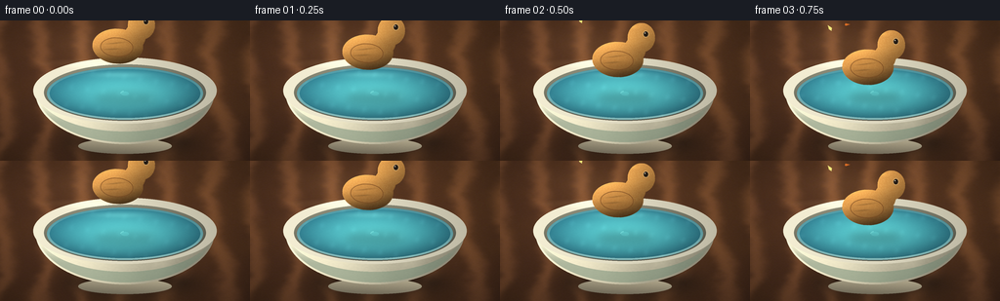
展开代码变化
--- 上一保存版本
+++ 本次保存版本
@@ -250,24 +250,24 @@
def ellipse(cx: float, cy: float, rx: float, ry: float) -> np.ndarray:
return (((x - cx) / rx) ** 2 + ((y - cy) / ry) ** 2 <= 1.0).astype(np.float32)
- body = ellipse(44, 50, 28, 18)
+ body = ellipse(43, 50, 26, 18)
head = ellipse(66, 27, 14, 15)
- neck = (((x - 61) / 12) ** 2 + ((y - 39) / 13) ** 2 <= 1.0).astype(np.float32)
+ neck = (((x - 60) / 11) ** 2 + ((y - 39) / 13) ** 2 <= 1.0).astype(np.float32)
tail = np.zeros_like(body)
draw_tail = Image.fromarray(np.uint8(tail * 255), "L")
ImageDraw.Draw(draw_tail).polygon(
- [(21, 45), (3, 34), (9, 51), (20, 58)], fill=255
+ [(22, 45), (6, 35), (11, 51), (21, 57)], fill=255
)
tail = np.asarray(draw_tail, dtype=np.float32) / 255.0
silhouette = np.clip(body + head + neck + tail, 0, 1)
# Slightly irregular hand-carved edge.
wood_noise = _noise_layer(sw_s, sh_s, 24, 711)
- grain_warp = 0.022 * np.sin(y * 0.29) + 0.048 * (wood_noise - 0.5)
- grain_phase = x * 0.78 + y * 0.16 + grain_warp * 9.0
+ grain_warp = 0.018 * np.sin(y * 0.27) + 0.044 * (wood_noise - 0.5)
+ grain_phase = x * 0.92 + y * 0.13 + grain_warp * 10.0
grain = 0.5 + 0.5 * np.sin(grain_phase * 2 * math.pi)
fine = _noise_layer(sw_s, sh_s, 100, 991)
- grain = np.power(grain, 2.4) * 0.72 + fine * 0.28
+ grain = np.power(grain, 2.8) * 0.73 + fine * 0.27
light = 0.96 - 0.010 * (x - 42) - 0.012 * (y - 42)
light += 0.09 * np.exp(-(((x - 38) / 18) ** 2 + ((y - 35) / 8) ** 2))
@@ -284,9 +284,16 @@
# Warm shadow at the lower edge and honey-colored upper planes.
lower = np.clip((y - 49) / 22, 0, 1)
- base_rgb *= (1.0 - 0.18 * lower)[..., None]
+ base_rgb *= (1.0 - 0.23 * lower)[..., None]
upper = np.exp(-(((x - 49) / 26) ** 2 + ((y - 28) / 10) ** 2))
base_rgb += upper[..., None] * np.array([20.0, 17.0, 9.0])
+
+ # Rounded turned-wood volume: a soft vertical belly highlight and an
+ # occluded underside keep the broad body from reading as a flat cutout.
+ belly = np.exp(-(((x - 47) / 15) ** 2 + ((y - 48) / 7) ** 2))
+ base_rgb += belly[..., None] * np.array([17.0, 13.0, 6.0])
+ under = np.clip((y - 59) / 9, 0, 1) * body
+ base_rgb *= (1.0 - 0.20 * under)[..., None]
alpha = silhouette.copy()
rgb = base_rgb.copy()
@@ -310,13 +317,19 @@
alpha = np.clip(alpha + beak, 0, 1)
# Wing panel and carved feather lines.
- wing = ellipse(43, 51, 18, 10.5)
- wing_edge = np.clip(wing - ellipse(43, 51, 17.1, 9.5), 0, 1)
+ wing = ellipse(42, 51, 17, 10)
+ wing_edge = np.clip(wing - ellipse(42, 51, 16.2, 9.2), 0, 1)
wing_tint = np.stack(
- [171 + 14 * grain, 111 + 18 * grain, 53 + 13 * grain], axis=-1
- )
- rgb = rgb * (1 - wing[..., None] * 0.30) + wing_tint * (wing[..., None] * 0.30)
+ [176 + 17 * grain, 114 + 20 * grain, 54 + 14 * grain], axis=-1
+ )
+ rgb = rgb * (1 - wing[..., None] * 0.24) + wing_tint * (wing[..., None] * 0.24)
rgb = rgb * (1 - wing_edge[..., None] * 0.55) + np.array([105, 63, 30]) * (wing_edge[..., None] * 0.55)
+
+ # Two shallow carved feather strokes, subdued enough to stay wood-like.
+ feather_1 = np.exp(-(((x - 40) / 9.0) ** 2 + ((y - (53 - 0.15 * x)) / 0.70) ** 2))
+ feather_2 = np.exp(-(((x - 38) / 8.0) ** 2 + ((y - (57 - 0.10 * x)) / 0.65) ** 2))
+ feathers = np.clip(feather_1 + feather_2, 0, 1) * wing
+ rgb *= (1.0 - 0.18 * feathers)[..., None]
# Dark carved outline, drawn with a distance field for a slightly soft edge.
yy_f, xx_f = np.mgrid[0:sh_s, 0:W].astype(np.float32)
@@ -344,8 +357,8 @@
rgb = rgb * (1 - catch[..., None]) + np.array([250, 244, 220]) * catch[..., None]
# Glossy top highlight.
- gloss = np.exp(-(((x - 56) / 11) ** 2 + ((y - 16) / 3.0) ** 2) * 2.0) * head
- rgb += gloss[..., None] * np.array([34.0, 27.0, 14.0])
+ gloss = np.exp(-(((x - 56) / 9) ** 2 + ((y - 16) / 2.6) ** 2) * 2.0) * head
+ rgb += gloss[..., None] * np.array([31.0, 25.0, 13.0])
rgba = np.dstack([np.clip(rgb, 0, 255), np.clip(alpha, 0, 1) * 255]).astype(np.uint8)
sprite = Image.fromarray(rgba, "RGBA")
@@ -495,6 +508,19 @@
duck_layer.alpha_composite(duck, (px, py))
scene = _paste_rgba(scene, duck_layer)
+ # Occlude the lowest sliver of the toy with a translucent front meniscus.
+ # This gives a physical waterline without hiding the body.
+ if duck_bottom > 79.0:
+ yy, xx = np.mgrid[0:H, 0:W]
+ u = xx / SS
+ v = yy / SS
+ waterline = np.exp(-((v - 92.0) / 2.2) ** 2)
+ waterline *= np.clip((u - 91.0) / 12.0, 0, 1) * np.clip((165.0 - u) / 12.0, 0, 1)
+ waterline *= float(np.clip((duck_bottom - 79.0) / 13.0, 0.0, 1.0))
+ scene = _blend(scene, np.array([73, 151, 153]), waterline * 0.34)
+ glint = np.exp(-((v - 91.4) / 0.9) ** 2) * np.clip((u - 101.0) / 13.0, 0, 1) * np.clip((157.0 - u) / 10.0, 0, 1)
+ scene += (glint * 0.16)[..., None] * np.array([165.0, 205.0, 188.0])
+
# Small glints on the rim and water, and a soft lens-free final grade.
yy, xx = np.mgrid[0:H, 0:W]
x = xx / W
可观测工具轨迹
实际执行的命令与返回图片。
命令 1exit 0
/bin/bash -c "pwd && rg --files -g 'prompt.txt' -g 'GENERATION_RULES.md' -g 'task_spec.json' -g '"'!*.mp4'"'"
命令 2exit 0
/bin/bash -c 'ls -la'
命令 3exit 0
/bin/bash -c 'cat prompt.txt'
命令 4exit 0
/bin/bash -c 'cat GENERATION_RULES.md'
命令 5exit 0
/bin/bash -c 'cat task_spec.json'
命令 6exit 0
/bin/bash -c "sed -n '1,240p' artifact_io.py && sed -n '1,220p' player_template.html"
命令 7exit 0
/bin/bash -c 'python generate.py'
命令 8exit 0
/bin/bash -c "python - <<'PY'
from PIL import Image
im=Image.open('frames/00.png')
im.resize((768,432), Image.Resampling.NEAREST).save('.tmp/frame00_x3.png')
im=Image.open('frames/12.png')
im.resize((768,432), Image.Resampling.NEAREST).save('.tmp/frame12_x3.png')
PY"命令 9exit 0
/bin/bash -c 'rg -n "def make_bowl_scene|def _draw_duck_sprite|def _water_layer|def render_frame" generate.py'
命令 10exit 0
/bin/bash -c "nl -ba generate.py | sed -n '135,241p' && nl -ba generate.py | sed -n '242,356p' && nl -ba generate.py | sed -n '427,512p'"
命令 11exit 0
/bin/bash -c 'python generate.py'
命令 12exit 0
/bin/bash -c "python - <<'PY'
from PIL import Image
for n in (0,6,12,19):
im=Image.open(f'frames/{n:02d}.png')
im.resize((768,432), Image.Resampling.NEAREST).save(f'.tmp/frame{n:02d}_x3.png')
PY"命令 13exit 0
/bin/bash -c 'python generate.py'
命令 14exit 0
/bin/bash -c "python - <<'PY'
from PIL import Image
for n in (0,7,12,19):
im=Image.open(f'frames/{n:02d}.png')
im.resize((768,432), Image.Resampling.NEAREST).save(f'.tmp/frame{n:02d}_x3.png')
PY"命令 15exit 0
/bin/bash -c "python - <<'PY'
import json
from pathlib import Path
import numpy as np
from PIL import Image
p=Path('.')
spec=json.loads((p/'task_spec.json').read_text())
with np.load(p/'pixels.npz') as z:
a=z['pixels']
print('pixels.npz', a.shape, a.dtype, int(a.min()), int(a.max()))
files=sorted((p/'frames').glob('*.png'))
print('frames', len(files), 'first', files[0].name, 'last', files[-1].name)
print('first_size', Image.open(files[0]).size, 'last_size', Image.open(files[-1]).size)
print('index.html', (p/'index.html').stat().st_size, 'bytes')
print('inspection', Image.open(p/'inspection.png').size)
PY"命令 16exit 0
/bin/bash -c 'python -m py_compile generate.py && sha256sum generate.py frames/00.png frames/19.png pixels.npz index.html'
命令 17exit 0
/bin/bash -c 'du -sh frames pixels.npz index.html inspection.png && ls -lh frames/00.png frames/07.png frames/12.png frames/19.png'
视觉工具实际返回图片 1

视觉工具实际返回图片 2
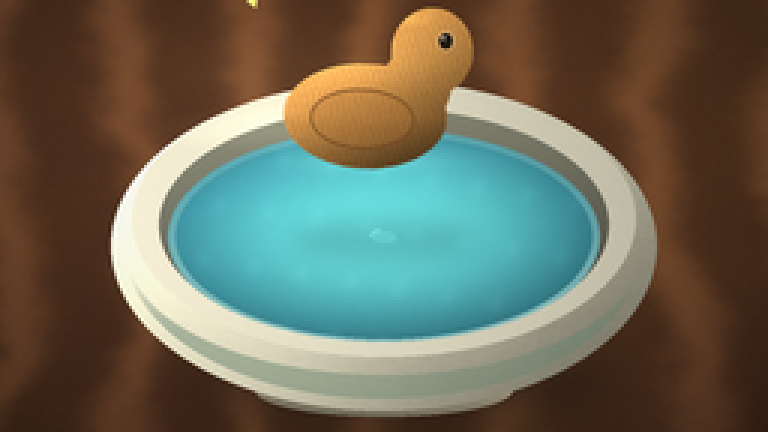
视觉工具实际返回图片 3
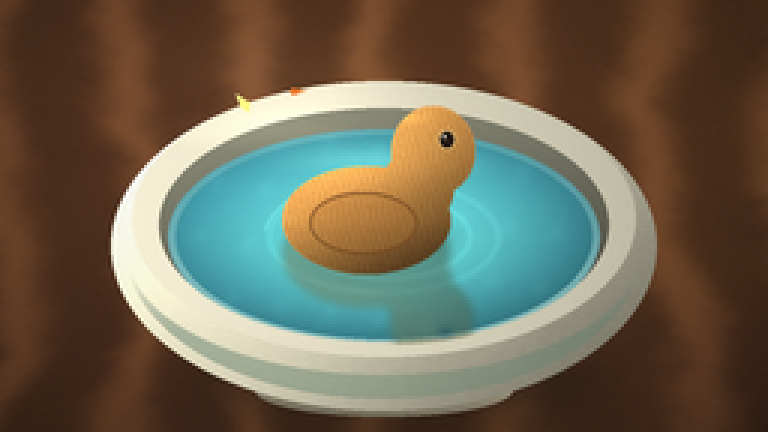
视觉工具实际返回图片 4

视觉工具实际返回图片 5
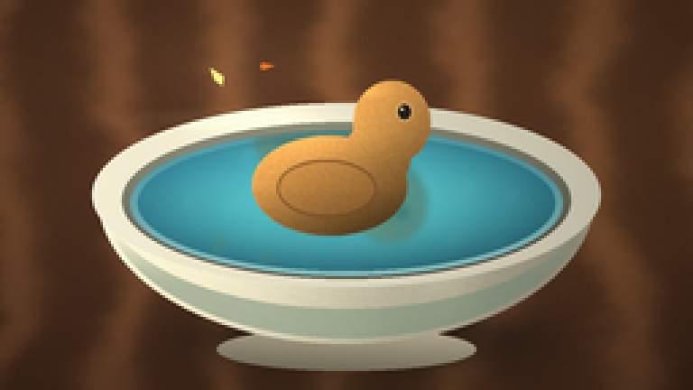
视觉工具实际返回图片 6
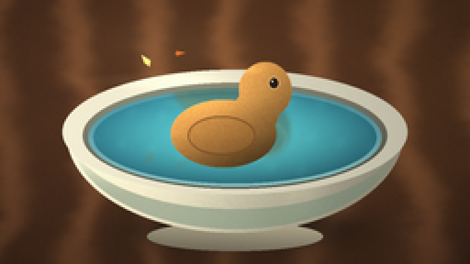
视觉工具实际返回图片 7
视觉工具实际返回图片 8
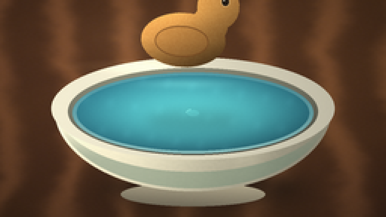
视觉工具实际返回图片 9
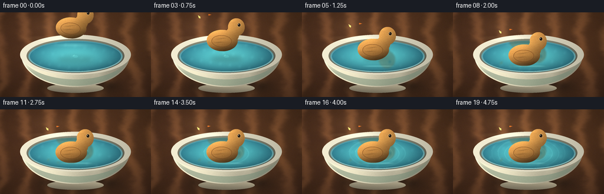
视觉工具实际返回图片 10
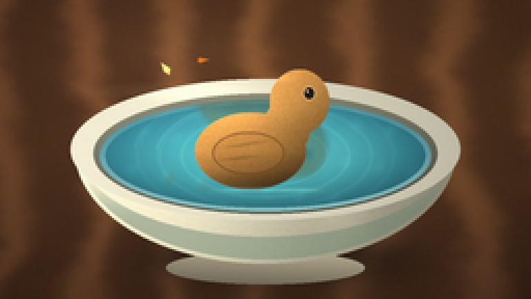
视觉工具实际返回图片 11
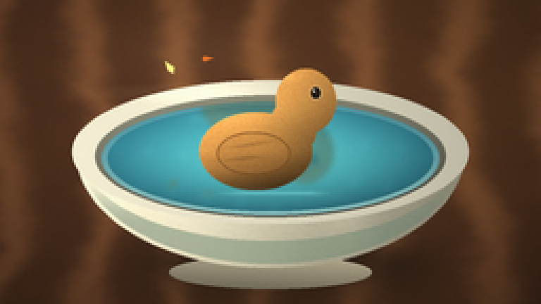
视觉工具实际返回图片 12
保存候选 4 份；完成命令 17 次；可验证图片返回 12 张。原始 API 响应与完整日志保留在本地。